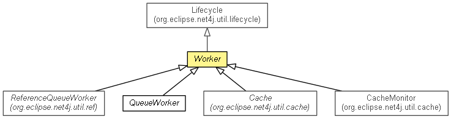

org.eclipse.net4j.util.concurrent
Class Worker
java.lang.Object
 org.eclipse.net4j.util.event.Notifier
org.eclipse.net4j.util.lifecycle.Lifecycle
org.eclipse.net4j.util.concurrent.Worker
org.eclipse.net4j.util.event.Notifier
org.eclipse.net4j.util.lifecycle.Lifecycle
org.eclipse.net4j.util.concurrent.Worker
- All Implemented Interfaces:
- INotifier, ILifecycle
- Direct Known Subclasses:
- Cache, CacheMonitor, QueueWorker, ReferenceQueueWorker
- public abstract class Worker
- extends Lifecycle

- Since:
- 2.0
| Methods inherited from class org.eclipse.net4j.util.lifecycle.Lifecycle |
activate, checkActive, checkArg, checkArg, checkInactive, checkNull, checkState, checkState, deactivate, deferredActivate, doAfterActivate, doBeforeActivate, doBeforeDeactivate, dump, getLifecycleState, isActive, isDeferredActivation, toString |
DEFAULT_TIMEOUT
public static final int DEFAULT_TIMEOUT
- See Also:
- Constant Field Values
DEFAULT_ERROR_HANDLER
public static final IErrorHandler DEFAULT_ERROR_HANDLER
- Since:
- 3.0
Worker
public Worker()
isDaemon
public boolean isDaemon()
setDaemon
public void setDaemon(boolean daemon)
getActivationTimeout
public long getActivationTimeout()
setActivationTimeout
public void setActivationTimeout(long activationTimeout)
getDeactivationTimeout
public long getDeactivationTimeout()
setDeactivationTimeout
public void setDeactivationTimeout(long deactivationTimeout)
doActivate
protected void doActivate()
throws Exception
- Overrides:
doActivate in class Lifecycle
- Throws:
Exception
doDeactivate
protected void doDeactivate()
throws Exception
- Overrides:
doDeactivate in class Lifecycle
- Throws:
Exception
getThreadName
protected String getThreadName()
handleError
protected void handleError(Exception ex)
- Since:
- 3.1
work
protected abstract void work(Worker.WorkContext context)
throws Exception
- Throws:
Exception
getGlobalErrorHandler
public static IErrorHandler getGlobalErrorHandler()
- Since:
- 3.0
setGlobalErrorHandler
public static IErrorHandler setGlobalErrorHandler(IErrorHandler globalErrorHandler)
- Since:
- 3.0
Copyright (c) 2004 - 2012 Eike Stepper (Berlin, Germany) and others.